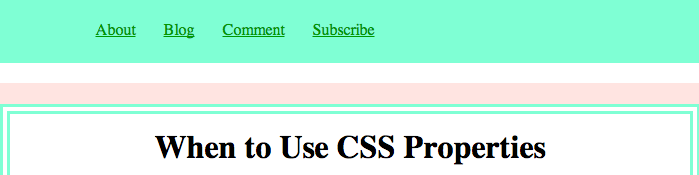
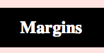
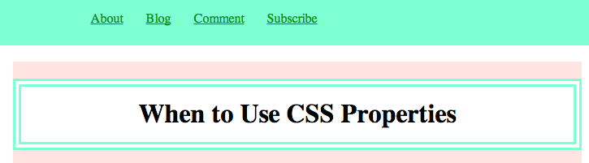

When to Use CSS Properties
Margins
Use margins when you want:
The exterior edge of your content to be some distance from the outer edge of the body, or surounding content.

Padding
Use padding when:
You want to move you content away from the outer edge of your element

Borders
Use borders when:
You want the edge of your content area to stand out!

Posted by: Shakrah Yves
Posted 7/5/14